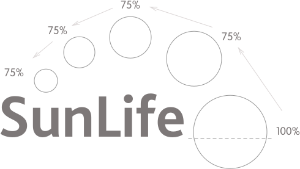
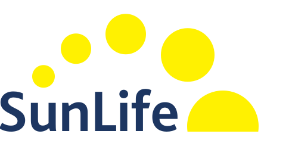

The SunLife logo is the masthead of our visual identity and so the ways we use it matter. Although the implementation of our logomark varies according to where it’s presented, the concept of sunshine remains.
Anatomy of our logo

Our logotype is set using a modified version of the Bliss2 typeface and combines with a series of rising and setting circles, each 75% larger than the last.

Our Sunshine circles are ‘sunshine elements’ and we use them to present important information and connect it to our visual identity. For the logotype, use Midnight when reproduced against white.
Sky panels
The circles in our logo must always be Sunshine. For the logotype, use white when reproduced against Sky.
Branded favicon
Three sunshine circles are recognisable as SunLife even in this, our smallest branded element.
Home screen icons
We’ve simplified our logomark for small icons, for example those found on a smartphone‘s home screen.
Online advertising
For the logotype, use white when reproduced against Sky.